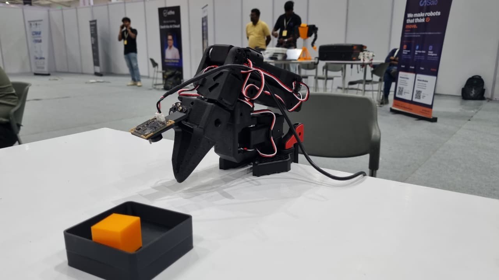

nwaves-train, nwaves-eval, nwaves-realdata, and My Robot deployment).

Bridging zero-shot and few-shot 30 Hz (< 33 ms/step) RGB-only Action Chunking with Transformers (ACT, lerobot==0.4.4) manipulation from NVIDIA Isaac Lab to physical Feetech STS3215 servos across:
0.52 m scene camera degrades if the camera mount shifts > 1 cm before wrist-camera acquisition.ArunMurugesan/real_pickplace_v4 + live BIEC My Robot recordings (--from Stage-1 run, batch_size ≤ 16), verified with nwaves-eval in simulation before nwaves-submit so unseen cube colours and poses are retained.| Evaluation Category | Makes / Attempts | Mean Time |
|---|---|---|
Stage-1 Simulation Seed (nwaves-eval / Official Leaderboard) |
10 / 10 (#1 Seed Rank) | 5.8 s |
| Real-Arm 3-Point (Zero-Shot Sim Policy) Makes | / | . s |
| Real-Arm 2-Point (Sim + Real Co-Trained) Makes | / | . s |
| Total Real-Arm Score & Overall Mean Time | pts | . s |